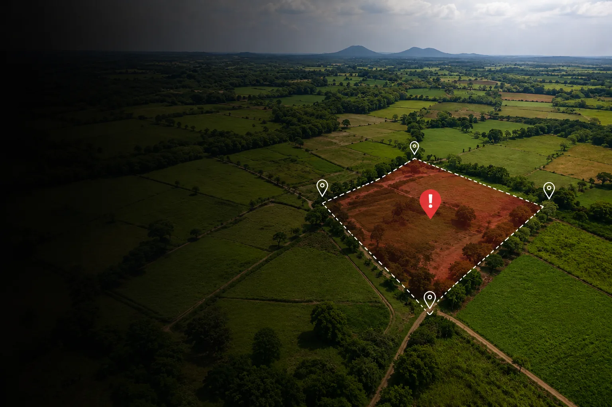

- Sengketa kepemilikan tanah;
- Tumpang tindih sertipikat;
- Pembatalan atau gugatan terhadap sertipikat ganda;
- Sengketa tanah warisan antar ahli waris;
PENGACARA SENGKETA TANAH
Pendampingan Hukum Profesional untuk Kasus Pertanahan & Properti

Apakah Anda Sedang Mengalami Permasalahan Sengketa Tanah?
Lindungi Hak Atas Tanah Anda Dengan Pendampingan Hukum Yang Tepat!
Pengacara Sengketa Tanah adalah layanan jasa yang disediakan oleh Kantor Hukum Navins Counsellors At Law. Kami memiliki tim pengacara dengan pengetahuan dan pengalaman yang sangat mendalam di bidang sengketa tanah, sehingga dapat memberikan solusi dan strategi hukum yang tepat dalam menangani permasalahan hukum sengketa tanah anda.
Ringkasan Layanan
Sengketa tanah memerlukan strategi hukum yang tepat karena setiap perkara memiliki karakteristik dan risiko yang berbeda. Memiliki sertipikat atas tanah bukan berarti aman dari potensi sengketa. Sepanjang prosedur penerbitannya dapat dibuktikan mengandung cacat administratif, maka hukum menyediakan ruang untuk meruntuhkan sertipikat tersebut.
Tim Pengacara Sengketa Tanah dari Kantor Hukum Navins Counsellors At Law memberikan pendampingan hukum secara komprehensif, mulai dari analisis dokumen, penyusunan strategi penyelesaian sengketa, negosiasi, hingga pendampingan hukum untuk melindungi hak dan kepentingan hukum Anda, baik melalui pendekatan Non-Litigasi (negosiasi/mediasi) maupun Litigasi (pengajuan gugatan di Pengadilan Negeri atau Pengadilan Tata Usaha Negara dan/atau pelaporan pidana di Kepolisian).
Jenis Sengketa Tanah Yang Kami Tangani
- Penyerobotan tanah;
- Sengketa jual-beli tanah bermasalah;
- Gugatan terhadap keputusan BPN;
- Pemalsuan dokumen pertanahan;
Tahapan Penanganan Perkara
-
Konsultasi Awal
Analisis duduk perkara, dokumen kepemilikan, dan kronologi sengketa.
-
Legal Audit
Pemeriksaan legalitas surat/dokumen tanah ke instansi terkait (jika diperlukan).
-
Upaya Non-Litigasi
Somasi, negosiasi, dan/atau mediasi dengan pihak lawan bila memungkinkan.
-
Penyusunan Strategi Litigasi
Pengajuan Gugatan di Pengadilan Negeri/Pengadilan Tata Usaha Negara dan/atau Pelaporan Pidana Pemalsuan Surat jika terdapat indikasi penggunaan Surat Palsu
Mengapa Memilih Kami
Analisis hukum yang komprehensif sebelum perkara diajukan.
Strategi penyelesaian yang disesuaikan dengan karakter setiap sengketa.
Penanganan perkara secara profesional, transparan, dan berorientasi pada perlindungan hak Anda.
Pengetahuan dan pengalaman tim pengacara kami yang sangat mendalam di bidang sengketa tanah, sehingga dapat memberikan solusi dan strategi yang tepat dalam menangani permasalahan hukum sengketa tanah anda.
Pertanyaan yang Sering Diajukan (FAQ)
Apa dokumen yang perlu disiapkan untuk konsultasi awal?
Sertipikat atau surat-surat yang berkaitan dengan kepemilikan / penguasaan tanah, riwayat transaksi (akta jual-beli/hibah/warisan), surat-surat terkait dengan sengketa (somasi, surat dari BPN, dsb.), SPPT PBB, dan kronologi singkat permasalahan Anda.
Berapa lama proses penyelesaian sengketa tanah?
Bergantung pada kompleksitas kasus.
Bagaimana jika pihak lawan menguasai tanah secara fisik tanpa hak?
Kami dapat membantu menyusun strategi hukum yang tepat untuk melindungi hak dan kepentingan Anda.
Hubungi Kami Sekarang
Jangan menunggu hingga hak Anda hilang atau sengketa semakin rumit. Konsultasikan permasalahan sengketa tanah anda segera bersama tim pengacara kami untuk mendapatkan analisis awal dan strategi hukum yang sesuai dengan kondisi perkara Anda.
Hubungi kami sekarang melalui Email: info@pengacarasengketatanah.com atau WhatsApp di nomor 0853-4291-7229.